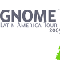
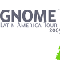

October 22, 23, 24
Día GNOME 2009 - Valparaíso, Chile
October 22, 23, 24
Fórum GNOME - Foz do Iguaçu, Brasil
GNOME Latin America Tour! 2009!
This is the official page for GNOME's Latin America Tour 2009. This project has one only goal: promote the integration, creation and fostering of GNOME contributors in Latin America.
This year, GNOME Brasil and GNOME Chile will be hosting stops for the Tour. Respectively Fórum GNOME and Día GNOME.
GNOMEs from all over the region will fly to both events to meet,
plan and party.


 



Join us!
Would you like your city to be a stop for the tour next year?
Would you like to become a contributor to the project?
Would you like to be there?
Then start rocking! Start contributing!
- Join your local mailing list: Chile, Brasil or tell us you want to create one for your country.
- Get into GNOME: help sorting bugs
- Code for GNOME: create new extensions, fix some bugs
- Make your own event! We will be happy to help you organize it and get speakers and funding for it
And of course, mail us and let us know you want to be a stop next year so we can consider you!